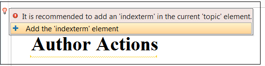
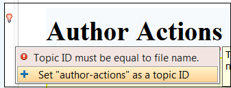
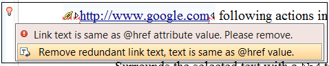

Schematron Checks to help Technical Writing
The Oxygen XML Editor User's Manual is written in DITA. In an older post I described in more detail how we collaborate internally on our User's Guide Project. And we also made available a copy of our User's Manual as a project on GitHub.
During these years on working on it, we progressively developed a set of simple rules which were originally kept in a plain text document. The problem is that nobody can really remember all these rules when actually writing. So recently we started to migrate these rules to Schematron and have them reported automatically has validation warnings and errors while editing the topics. And with the release of Oxygen 17 we can now also add quick fixes for each of these problems.
So below I will try to tell you what each rule imposes and what it's Schematron implementation looks like. If you want to quickly test these rules on your side, you can add them to the Schematron file which is used by default to validate DITA topics located in: OXYGEN_INSTALL_DIR/frameworks/dita/resources/dita-1.2-for-xslt2-mandatory.sch.
- Try as much as possible to add at least an indexterm element in each
topic. This is useful when the Index page is created for the PDF output or the
Index tab is created for the WebHelp output. As this is not a requirement, we
wanted to report this issue as an error. The end result looks like this: And the Schematron pattern looks like
this:
<pattern xmlns:sqf="http://www.schematron-quickfix.com/validator/process"> <rule context="/*"> <assert test="prolog/metadata/keywords/indexterm" role="warn" sqf:fix="addFragment"> It is recommended to add an 'indexterm' in the current '<name/>' element. </assert> <!-- Quick fix to add the indexterm element element and its parents --> <sqf:fix id="addFragment"> <sqf:description> <sqf:title>Add the 'indexterm' element</sqf:title> </sqf:description> <sqf:add match="(title | titlealts | abstract | shortdesc)[last()]" position="after" use-when="not(prolog)"> <xsl:text> </xsl:text><prolog xmlns=""><xsl:text> </xsl:text><metadata><xsl:text> </xsl:text><keywords><xsl:text> </xsl:text><indexterm><xsl:text> </xsl:text> </indexterm><xsl:text> </xsl:text></keywords><xsl:text> </xsl:text></metadata><xsl:text> </xsl:text></prolog> </sqf:add> </sqf:fix> </rule> </pattern>
- The ID of each topic must be equal to the file name (minus the extension). One of the outputs
we produce (I think CHM) had a limitation when building the context mapping between help IDs
and actual HTML content so this was an important rule for us, thus an error is reported on
this. Also a quick fix is added to auto-correct the topic ID based on the file name. The end
result looks like this: and the Schematron pattern
is:
<!-- Topic ID must be equal to file name --> <sch:pattern> <sch:rule context="/*[1][contains(@class, ' topic/topic ')]"> <sch:let name="reqId" value="replace(tokenize(document-uri(/), '/')[last()], '.dita', '')"/> <sch:assert test="@id = $reqId" sqf:fix="setId"> Topic ID must be equal to file name. </sch:assert> <sqf:fix id="setId"> <sqf:description> <sqf:title>Set "<sch:value-of select="$reqId"/>" as a topic ID</sqf:title> <sqf:p>The topic ID must be equal to the file name.</sqf:p> </sqf:description> <sqf:replace match="@id" node-type="attribute" target="id" select="$reqId"/> </sqf:fix> </sch:rule> </sch:pattern>
- Report when plain links or related links to web resources have the same text inside them as
the value of the @href attribute. We had cases in which writers would input web links
like
this:
<xref href="http://www.google.com" format="html" scope="external">http://www.google.com</xref>
which is redundant because when you set no text to the link, the publishing uses the @href attribute value as the link text. So we wanted to report such cases as warnings and to have a quick fix which removes the link text:The Schematron pattern looks like this:<sch:pattern> <sch:rule context="*[contains(@class, ' topic/xref ') or contains(@class, ' topic/link ')]"> <sch:report test="@scope='external' and @href=text()" sqf:fix="removeText"> Link text is same as @href attribute value. Please remove. </sch:report> <sqf:fix id="removeText"> <sqf:description> <sqf:title>Remove redundant link text, text is same as @href value.</sqf:title> </sqf:description> <sqf:delete match="text()"/> </sqf:fix> </sch:rule> </sch:pattern>
- Avoid using the @scale attribute on images. We wanted to smooth scale images in an
external image editor so it was prohibited to use the @scale attribute on images. The
Schematron pattern for
this:
<pattern> <rule context="*[contains(@class, ' topic/image ')]"> <assert test="not(@scale)"> Dynamically scaled images are not properly displayed, you should scale the image with an image tool and keep it within the recommended with and height limits. </assert> </rule> </pattern>
We have an upcoming event dedicated to Schematron Quick Fixes if you want to become more familiar with the technology. And we also have a GitHub project which tries to combine the notion of a style guide for writing documentation inside a company with a very simple manner of defining checks which can be applied to impose the styleguide rules.
I would be interested in your feedback, especially if you have checks that you perform right now on your content and you consider that they might benefit others.